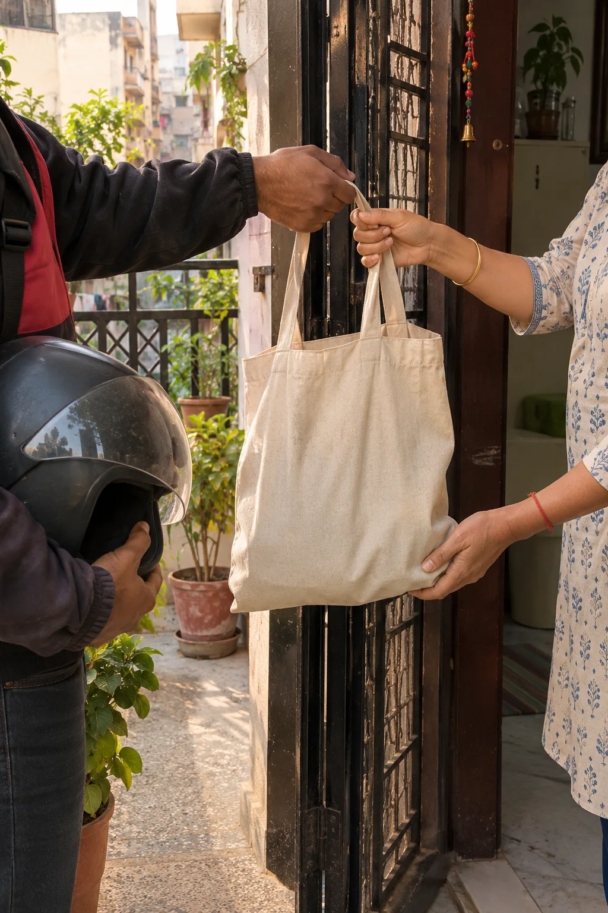

Atulyash
Atulyash 01
01Single-origin MP Sharbati. Never blended with other varieties.
Atta in its purest form. Ours is milled slowly on natural stone. Fresh, every week.

We keep changing everything around us. Our skincare, our cooking oil, even our utensils, because we research what is best for our family. So why don't we stop and think about our atta? Its quality, where it comes from, how it is made. We just take their word for it.
01Single-origin MP Sharbati. Never blended with other varieties.
 02
02In several stages.
 03
03Natural stone chakkis. No emery stone, no steel rollers.
 04
04Packed with minimal handling.
 05
05Milled in small batches the day before, delivered the next morning.

06We deliver with our own riders.

₹240
Order fresh atta₹120 a kg, about ₹3.60 a roti.
Freshly milled. Delivered weekly across Delhi NCR.